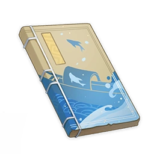

String of Pearls¶

Author: Yun Jin
Act I: Of Fish And Water¶
Note
Zixin is a poor fisherwoman whose family struggles to make ends meet. One day, she is selling fish on the street when she carelessly loses the string of pearls she usually wears. Though what she does not know is that this lost string of pearls will change her fate for good...
Male Role: Fan Jie
Female Role: Zixin
Comic Role: Grandma Zhang
Scene I¶
(Enter Zixin wearing blue clothes)
(Aloud)
Zixin: "The tide reflects the mountains low, a light breeze nurtures reefs below."
(Aside)
Zixin: "I am a fisherman's daughter, I grew up by the dock. This year I am sixteen years old."
Zixin: "My parents are old now. What choice do I have but to take up the oar myself? It would seem I am fated for a life on the ocean."
(Dongtang, lento, innig)
Zixin: "With sail rope in hand, I cast the net among the free-swimming fish. It is with their trade that I shall sustain my family."
(Zixin casts out the net and brings it back in)
(Dongtang, appassionato)
Zixin: "It is hard every day under the sun, moon, and stars. The rich live fitfully whilst the poor must struggle. This is the way of things."
Zixin: "I too am envious of the wealthy women's splendor, though I have never pitied myself, even with but a single string of pearls on my wrist."
Zixin: "I have nothing to show for myself but bare walls. All I have is what I make with my own hands."
(Zixin ties her boat to the wharf and jumps to the shore)
(Dongtang, senza misura)
Zixin: "It's time to go on the streets and sell fish."
(Exit Zixin)
Scene II¶
(Enter Zixin carrying a hand-basket)
(Dongtang, straziante)
Zixin: "Fresh fish, fresh fish! Buy it here, buy it now!"
(Enter Grandma Zhang carrying a flower basket)
(Sprechstimme)
Grandma Zhang: "Look at those fish (fish wag their tails, spraying Grandma Zhang with water), so fierce! They will make a tasty soup!"
Grandma Zhang: "All soaked like that, from head to hips, don't I look like a young lady with pink cheeks and vermilion lips?"
(Aside)
Zixin: "What do they call you, granny?"
Grandma Zhang: "You can call me Grandma Zhang. I sell flowers on this street."
Grandma Zhang: "Deary, such a soft-spoken girl like you won't sell a fish before the sky turns dark."
Grandma Zhang: "You might be beautiful, but if you're too shy to raise your voice, you won't be able to fill your stomach."
(Zixin lowers her head)
(Aside)
Zixin: "You're so funny, granny."
Zixin: "Oh no... Where..."
Grandma Zhang: "What happened?"
Zixin: "My string of pearls, I never take it off my wrist. But it's gone. How could that be?"
(Enter Fan Jie, dressed in colorful stage clothing and holding the string of pearls)
(Dongtang, andante calmo)
Fan Jie: "Like a golden crow that utters the truth beyond the waves blue, I went for a stroll and a string of pearls appeared in my view."
(Aside)
Fan Jie: "My name's Fan Jie, at your service. I make a living doing odd jobs in the docks. My brothers here selected me as their leader."
Fan Jie: "The string of pearls I picked up today must belong to that lady."
Fan Jie: "I intend to return it to its rightful owner, though I don't want to be falsely accused of any indecent act."
Fan Jie: "Perhaps I shall see if there are any marks of wearing the pearls on her wrist."
(Dongtang, 12-bar prelude, irato)
Fan Jie: "In scorching sun and steaming breeze, does selling fish come with ease?"
Zixin: "My fish are fresh, that I guarantee. Boil them or fry, the choice belongs to thee."
Fan Jie: "Those fish are as fierce as a tiger, they won't stop moving even for a second."
Fan Jie: "Would you step forward and introduce yourself?"
(Zixin steps forward)
Fan Jie: "It's only fitting that these beautiful pearls belong to a fair lady of equal beauty."
(Dongtang, appassionato)
Zixin: "My heart is telling me that this man might be a mack, taking pleasure in playing with me, but he won't fool me with his nonsense."
Zixin: "I turn around with my apricot eyes wide open and scold him."
Zixin: "Such a scoundrel like you must have no dignity!"
(Aside)
Fan Jie: "No need to get so angry, milady. I just wanted to check if there are marks of wearing the pearls on your wrist."
Fan Jie: "It looks like, indeed, you are the rightful owner, milady. Now that the string of pearls is returned to you, you need not worry anymore."
Fan Jie: "My name's Fan..."
(Fan Jie pauses, covers his mouth, and turns to leave. Exit Fan Jie.)
Fan Jie: "It's time for me to go, ha."
(Aside)
Zixin: "Oh hero, please wait..."
(Dongtang, lento, innig)
Zixin: "Led by my timid heart, I wronged a righteous man."
Zixin: "I can't even remember the name of that hero of mine. What should I do to thank him?"
(Aside)
Zixin: "How shameful..."
Grandma Zhang: "But my deary, what is it if not destiny? A fair lady has finally met her noble hero."
Act II: The Search for the Gentleman¶
Note
The young man who had returned Zixin's string of pearls left without revealing his name. Grandma Zhang comes up with a plan that will allow Zixin to find him...
Male Role: Fan Jie
Female Role: Zixin
Comic Role: Grandma Zhang
Comic Roles: Zhang San, Li Si, Wang Er'ma
Scene I¶
(Enter Zixin and Grandma Zhang)
(Aside)
Zixin: "I have been depressed of late, and in no wise have I been at peace."
Zixin: "For I spoke in error 'gainst a hero seeking to do good."
Zixin: "He sought to return my string of pearls, and I did him no thanks nor ask him his name, but instead upbraided him most grievously."
Zixin: "Shamed I am, and do wish to find my benefactor, but amidst this vast harbor, how shall I find him?"
Grandma Zhang: "As I see it, deary, you need not be sorrowful, nor should you be troubled."
Zixin: "Oh, granny, why do you say so?"
Grandma Zhang: "You need only put up a notice, offering Mora up to the one who returns the string of pearls. Will he not then come forth?"
(Danqing, andante calmo)
Zixin: "Thus is it said—"
Zixin: "As wine turns red peoples' faces, so do riches move many places."
(Zixin lowers her head and paces)
Zixin: "I am of a mind to find him with this device, yet I wonder if he should come forthwith."
(Aside)
Grandma Zhang: "Come now, do not hesitate. Let us take action."
Grandma Zhang: "You shall lose little who rely on me."
(Exeunt Zixin and Grandma Zhang)
Scene II¶
(Enter Zhang San, Li Si, Wang Er'ma)
(Sprechstimme)
Zhang San: "I am Zhang San."
Li Si: "I, Li Si."
Wang Er'ma: "And Wang Er'ma I."
Zhang San: "Hark at that notice! Let me go up, and earn the bounty."
Li Si: "Shall the officer ask, 'think to do good, do you?'"
Wang Er'ma: "Hah! A fool is he who would speak true."
(Aside)
Zhang San: "Ho, brothers. Are you all bound for that lass Zixin's place, her reward to claim?"
Li Si: "Indeed."
Wang Er'ma: "So it is."
Li Si: "Picked up her headdress also, did you?"
Wang Er'ma: "No, I'd have sworn it was her earrings."
Li Si: "Falsehood - t'was the flower upon her head."
Zhang San: "Fools. Perfume it was!"
Wang Er'ma: "Ah, however it may be, sure am I that we all know well the score."
Zhang San: "Ahahah."
Li Si: "Haha!"
(Zhang San, Li Si, and Wang Er'ma turn to Zixin)
Zhang San: "Ah, Zixin, have you my bounty ready? For I, Zhang San, have found your lost perfume!"
Li Si: "Stand aside, friend, for I have come to return your headdress. The prize is mine, therefore."
Wang Er'ma: "No, no, no, Wang Er'ma it is who returns your earrings. Mine is the reward."
Zixin: "You... you lot dizzy me."
Zixin: "For we have never met, and if I lost my earrings, scents, or headwear, would I not know it?"
Zhang San: "Why, you must have forgotten it in your hurry at the fish-store. Just give the reward here, do not worry!"
Li Si: "The Mora, then, and be quick about it!"
Wang Er'ma: "Or I shall ruin your stall, and your good name."
Zixin: "Ah... How I have attracted the eye of these worthless scoundrels!"
Zixin: "Granny, see what trouble your plan has wrought!"
Grandma Zhang: "Worry not, lass. I shall devise a way to see them off."
Grandma Zhang: "Hah!"
(Zhang San, Li Si, Wang Er'ma fall to the ground)
Grandma Zhang: "I had this lass put up a false bounty to catch such thieves as you!"
Grandma Zhang: "The items you bring are false — now hand them over."
Grandma Zhang: "Or else..."
Zhang San: "Or else what?"
Grandma Zhang: "Then the headdress made of prize Glaze Lilies, the earrings of fine Noctilucous Jade, and the scents shipped in from a faraway land...
Grandma Zhang: "You shall have to pay for them all! Now then, where is the Mora? Give it here!"
(Grandma Zhang pursues Zhang San, Li Si, Wang Er'ma, broom in hand)
Zhang San: "Ow, ow!"
Li Si: "Stop hitting us, please! We don't want your Mora anymore!"
Wang Er'ma: "Now to find that fellow who truly picked her things up to come and own up — sooner rather than late!"
Scene III¶
(Zhang San brings Fan Jie in)
(Aside)
Zhang San: "Why, I have it now. You must be the thief who took the lady's things. My brothers and I took a beating on your account!"
Fan Jie: "I, Fan Jie, have ever been upright, and such things as stealing are beneath me. Do not think to accuse me falsely."
Zhang San: "Well, aren't you a stubborn one? Dare you go up with me to meet the owner of the lost goods?"
Fan Jie: "I fear you not. Let us go! Indeed, I should like to see who it is who maligns me."
(Zhang San and Fan Jie turn to Zixin)
Zhang San: "Is the proprietor not Zixin? I shall see how you get out of this one!"
Fan Jie: "Ah! So it is you, then!"
(Dongtang, appassionato)
Fan Jie: "This was the lady who was wroth, and no more words came from her mouth."
(Dongtang, allegro)
Fan Jie: "Cease deceiving the young woman, for I am Fan Jie, a dock worker."
Fan Jie: "I have lived frugally and humbly. Whereupon would I steal a lady's makeup?"
Fan Jie: "You met my honesty with accusations, though I returned the item swiftly as I could."
(Aside)
Zixin: "Ah, so this hero is named Fan Jie."
Zixin: "It is my fault, then, that he should have been tangled up in this business."
Zixin: "I shall beg his forgiveness shortly — and should he not accept, twice or thrice more shall not be too few."
(Zixin walks up to apologize to Fan Jie)
Zixin: "O, hero, indeed we had a misunderstanding before, but..."
(Fan Jie turns)
Fan Jie: "Hmph."
(Zixin smiles and steps forward)
Zixin: "...I did have some other motive in doing this."
Zixin: "For you did not leave your name behind when you left, and I wished to repay you but found you not."
Zixin: "So I decided on this device. It is my fault that such trouble came to you."
Zixin: "Please, allow me to apologize."
Fan Jie: "Oh?"
(Dongtang, lento, innig)
Fan Jie: "Though I was at first resentful to be maligned, when I calm down to think, I realize it was but a misunderstanding."
Fan Jie: "Calm must rule me, lest I speak in error."
(Aside)
Fan Jie: "If I may ask you..."
Fan Jie: "You said earlier that the business from before was a misunderstanding."
Fan Jie: "You were of a mind to seek the person who returned your string of pearls, and put out that notice, which by chance snared me wrongly, is that true?"
Zixin: "It is, and again, I apologize."
(Fan Jie catches Zixin)
Fan Jie: "Nay, you need not be so polite. You do me too much honor."
Fan Jie: "I, too, acted rashly, and put you upon the spot. I, too, must apologize."
Zixin: "Oh, no, please..."
(Fan Jie salutes her)
Zhang San: "What!? What are you doing? So is the Mora to be paid or not?"
Grandma Zhang: "Oh, shush you. This is their tale — what business is it of yours?"
Grandma Zhang: "See, all the ladies and gentlemen in the audience are here to see a show by Yun Jin, and they have no time for your nonsense."
Grandma Zhang: "Open your eyes and see, and stand aside there."
(Exeunt, Grandma Zhang dragging Zhang San)
Zixin: "Come to think of it, I sell fish here every day. How is it, then, that I have never seen you?"
Fan Jie: "I pass this way each day to work."
Fan Jie: "Perhaps I was lost amid the throng. But perchance we may meet tomorrow..."
Zixin: "So it is... May we meet then."
Act III: The Pearls, Lost Again¶
Note
Our heroine meets the young man again. They fall in love and are ready to live together happily ever after. But a despot who covets Zixin's beauty and virtue is putting the skids under their plans...
Male Role: Fan Jie
Female Role: Zixin
Comic Role: Grandma Zhang
Villain: Wu Wang
Comic Roles: Wu Yi, Wu Er
Scene I¶
(Enter Zixin and Fanjie from either side)
(Aloud)
Fan Jie: "The dogs do bark excitedly at dawn."
Zixin: "The sun shines, and the frost on the eaves thin."
(Aside)
Fan Jie: "Is that Ms. Zixin I see?"
Zixin: "Indeed, it is! Is that you, Fan Jie?"
(Dongtang, senza misura)
Fan Jie: "I dreamt of you fair last night."
Zixin: "I regretted our parting, though we meet again soon."
Both: "That my heart's desire should come true."
(Aside, unison)
Zixin: "O Hero..."
Fan Jie: "O Maiden..."
(Aside)
Fan Jie: The sun speeds westwards and high, and work begins at the docks. I must go and begin my day."
Fan Jie: "Ms. Zixin, I take my leave."
(Zixin salutes and watches him depart. Fan Jie turns back as he grows further away. Zixin lowers and raises her head again as Fan Jie exits. Zixin wrings her hands.)
(Dongtang, lento, innig)
Zixin: "Ah, to have turned cowardly at the last moment!"
(Exit Zixin)
Scene II¶
(Enter the playboy Wu Wang, open-collared and dressed in green, with his companions Wu Yi and Wu Er)
(Aloud)
Wu Wang: "I am the great Wu Wang, master of these streets."
Wu Wang: "Today I am bored and idle, and thus stroll about looking for sport."
(Aside)
Wu Wang: "Wu Yi, Wu Er!"
(Same Aside)
Both: "Yes, sir?"
(Aside)
Wu Wang: "I have a mind to eat something new today. Have you any ideas?"
Wu Yi: "What about some Golden Shrimp Balls?"
Wu Wang: "I tire of fine meat and fatty fish. Golden Shrimp Balls seem alright."
Wu Wang: "Wu Er, go hence and find a store that sells a serving of those shrimp balls."
Wu Er: "I will."
Wu Wang: "Wait. It must be fried to a pure golden sheen, without even the slightest hint of being burnt."
Wu Er: "Without even the slightest hint of being burnt. Okay."
Wu Wang: "Hold. And they must be of size most equal. Not one shall be larger or smaller than the next."
Wu Er: "And they shall all be the same size, yes. Do you wish to go over the instructions again?"
Wu Wang: "No need."
Wu Er: "Do you have any other requests, sir? Just say the word."
Wu Er: "And if the store fails to meet your expectations, then let's do as we always do—"
Wu Yi: "What do we always do?"
Wu Er: "Not give them any Mora, of course."
Wu Wang: "No, no, come, look at the fish store yonder. Now there's a beauty more filling than a fine meal."
(Dongtang, lento, innig)
Wu Wang: "Let us go up and seek some details as we may... All the better to seize her with."
(Wu Wang turns to Zixin)
(Aside)
Zixin: "Would you like to buy fish, sir?"
Wu Wang: "Why, of course, of course. Which family do you hail from, miss, and where fare your parents?"
Zixin: "I grew up at the docks. My parents have grown old, and I run the store alone, selling fish to make ends meet."
Zixin: "Why do you ask, sir?"
(Turns, sotto voce)
Wu Wang: "Wonderful, wonderful. Her parents are not at hand. A fine chance to strike, indeed."
(Turns back, facing Zixin)
Wu Wang: "Then, miss, are you yet engaged, or pledged to be wedded?"
Zixin: "I have not, sir, for I have busied myself working all this time."
Zixin: "But sir, what has the matter of my marriage have to do with your business buying fish?"
(Turns, sotto voce)
Wu Wang: "Very good, very good! She has plighted no troth. If trouble should come of this, no one will save her."
(Turns back, facing Zixin)
Wu Wang: "Then, miss, have you one you are enamored with?"
(Zixin lowers her head and says nothing)
(Dongtang, senza misura)
Wu Wang: "See, see how she casts down her eyes without speaking. So, then, there is no such person. Evil enters and masters my thoughts—"
Wu Wang: "Come, friends, take her hence — let us not waste precious time or beauty."
(Exeunt Wu Wang, Wu Yi, and Wu Er, taking Zixin with them)
Scene III¶
(Enter Grandma Zhang)
(Aside)
Grandma Zhang: "Now then, ladies and gentlemen, if you have listened oft to Yun Jin's plays and become wise to the ways of theater, then you have likely guessed what shall come next."
Grandma Zhang: "Shall we not now accelerate towards a fight most fierce?"
Grandma Zhang: "But afore the hero steps forth, he must by fortune be inspired."
Grandma Zhang: "When evil beasts run amok, disturbing the lives of the people, or when times and tides are turbulent, that is when heroes arise."
Grandma Zhang: "If you should pluck up your courage, your deeds shall be remembered. But if you prove craven..."
Grandma Zhang: "Who then will remember if you were named Zhang Jie, Wang Jie, or Fan Jie?"
Grandma Zhang: "And what's more, we ordinary folk must show our mettle, and yet leave a tale of rescuing our fair lady."
Grandma Zhang: "Let us see how Fan Jie shall act."
(Enter Fan Jie)
(Aside)
Grandma Zhang: "Alas, why have you only arrived now?"
Grandma Zhang: "Miss Zixin here was just taken by the notorious hooligan, Wu Wang!"
(Dongtang, allegro)
Fan Jie: "Ah, alas!"
Fan Jie: "When I heard her words I was a-fright, but I never thought that catastrophe was so near to me."
Fan Jie: "This villain burns, steals, and kills as he wills. If I were to go forth..."
Fan Jie: "I shall, in all likelihood, not return."
(Grandma Zhang tosses the string of pearls to Fan Jie)
Grandma Zhang: "S—sir Fan, wh—whatever shall we do?"
(Dongtang, allegro)
Fan Jie: "As I see these pearls, my resolve hardens—"
Fan Jie: "How could I surrender a maiden to this villain?"
Fan Jie: "Pearl-string in hand, I draw my sword in fury — to make contrite that Wu Wang, and have him sue for mercy."
(Exeunt Fan Jie and Grandma Zhang)
Act IV: Trial By Candlelight¶
Note
To rescue the one he loves, the young man charges heedlessly into danger, entering the lair of the enemy with his sword drawn: and on the other side, his beloved hangs on desperately...
Male Role: Fan Jie
Female Role: Zixin
Comic Villain: Wu Wang
Scene I¶
(Fan Jie with a robe, stage upper left, Zixin sits alone, stage right)
(Dongtang, appassionato)
Fan Jie: "O cursed villain, to steal a maiden in broad daylight! My beloved suffers and I grieve."
Fan Jie: "So it falls to my sword to bring judgment on those who so forsake the law."
Fan Jie: "Let us away."
(Fan Jie spurs his horse and heads for Wu Wang's stronghold)
(Aside)
Fan Jie: "Swiftly did I ride here, pursuing the sounds of merriment from afar."
Fan Jie: "This, then, must be the wolf's den."
Fan Jie: "If I am to rescue Zixin, I must scout their lair out with care."
Fan Jie: "A good plan. We go!"
(Fan Jie leaps over the rear wall, exeunt.)
(Common time)
Zixin: "Within a lone lamp and half-burnt candles — and without lurk the wolves and tigers."
Zixin: "Who could have expected such disaster? And how shall I flee this hive of villainy?"
Scene II¶
(Wu Wang enters from right through a door, drunk)
(Aloud)
Wu Wang: "I come and go wherever I am pleased, and even gods fall if I am not appeased."
(Aside)
Wu Wang: "Haha, got one in the day, didn't I? Hehe."
Wu Wang: "That lovely, lovely lady."
Wu Wang: "Now that we have made merry, as is our wont. It is time — we meet the fair maiden!"
(Dongtang, andante calmo)
Zixin: "Here that impetuous drunken rascal comes. Still! The weeping candlelight is in my hand."
(Aside)
Zixin: "You shall not have me!"
(Wu Wang chases Zixin. Zixin strikes Wu Wang with the candlestick. He falls down. She slumps in relief.)
(Dongtang, andante calmo)
Zixin: "In the confusion, a stroke of fortune! On shaking feet I flee."
(Aside)
Zixin: "Not a light to be seen outside. How is this so dark?"
Zixin: "Perhaps I should relight this candle—"
Zixin: "No. Would I not be imperiled if recaptured?"
Zixin: "Better then to carry this unlit light, and grope our way out through the night."
Zixin: "Yes, so shall it be done."
Act V: Twin Pearls Returned¶
Note
The bandit lair in the dead of night is pitch-dark. The tyrant, the youth, and the lady grope in the dark in search of one another, and there, a perilous misunderstanding is about to play out...
Male Role: Fan Jie
Female Role: Zixin
Comic Villain: Wu Wang
Scene I¶
(Fan Jie at stage upper left, Zixin at stage upper right. Wu Wang lies on the ground, his eyes closed)
(The two people grope in the darkness of Wu Wang's lair)
(Their hands make contact in the dark, but not knowing who the other is, they draw away in alarm)
(Wu Wang awakens)
(Aside)
Wu Wang: "Why, that girl is as willful as I, to dare to strike me so."
Wu Wang: "No one is about. Perhaps they have fled further within."
Wu Wang: "Hmph. The night is come, the gate is closed."
Wu Wang: "Unless they jumped the wall, how should that maiden escape? Surely not by the gate!"
(Wu Wang enters the hall)
(Aside)
Wu Wang: "Hah. These louts are drunk out of their gourds. Not one light they lit!"
Wu Wang: "Well, let me get myself one, and let us begin our search."
(Wu Wang steps on Fan Jie's foot in the dark, and they both draw back)
Wu Wang: "Haha, so there you are!"
(Wu Wang stretches his arms out to lunge at Fan Jie, who ducks. They stumble about in the dark as Zixin shrinks into a corner)
(Wu Wang finally grabs Fan Jie)
Wu Wang: "I have you!"
(Aside)
Wu Wang: "Hmm? Have you grown so wide about the waist since last we met?"
Fan Jie: "I put on more clothes, all the better to keep warm with."
Wu Wang: "Indeed, one must wear more in cold weather."
Wu Wang: "Then why have you grown so tall?"
Fan Jie: "I have worn high shoes, all the better to put on a show with."
Wu Wang: "Oh, surely that must be difficult."
Wu Wang: "And why have your hands grown so rough?"
Fan Jie: "Well... Lean closer and I shall tell you."
Wu Wang: "Of course, of course."
(Fan Jie stabs Wu Wang with his sword)
Fan Jie: "To bear a sword, All the better to take your life with."
(Wu Wang falls)
Scene II¶
(Aside)
Fan Jie: "Foul villain. But a stroke, and you are slain."
Zixin: "Are you Fan Jie?"
Fan Jie: "This voice — you must be Miss Zixin!"
(Fan Jie and Zixin reach out and touch each other)
Zixin: "Fan Jie!"
Fan Jie: "You must have suffered."
Fan Jie: "I have slain that devil. His minions are all that remain."
Fan Jie: "His death shall scatter them like monkeys when their great tree falls."
Fan Jie: "Do not fear, I shall break the gate."
(Fan Jie breaks the gate)
Zixin: "Ah! My life would have been forfeit had you not arrived."
(Dongtang, lento, innig)
Zixin: "A heart of pearls in your house shall nest."
Fan Jie: "In the skies with the wind shall we find rest."
Fan Jie: The white moon shines o'er the catalpas glade.
Zixin: And with lowered head, the promise is made.
—End—